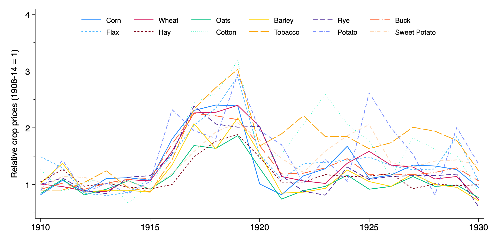
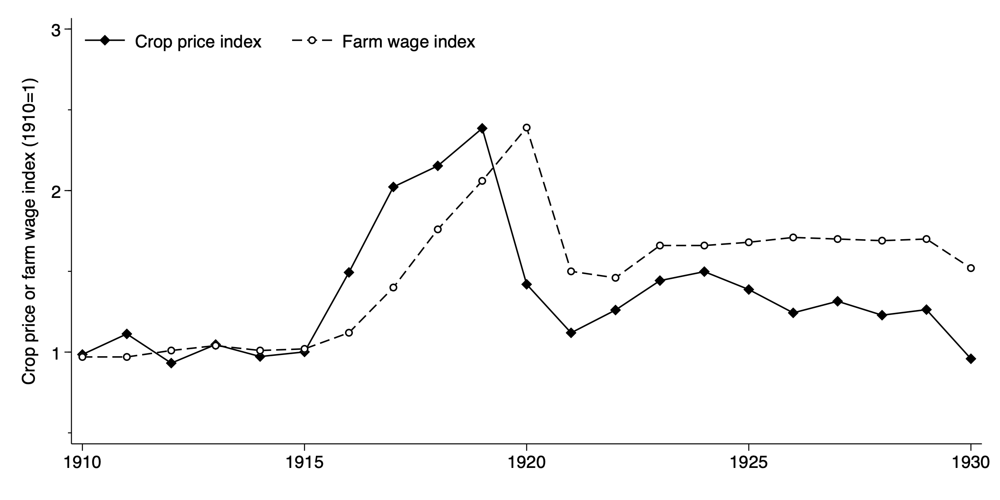
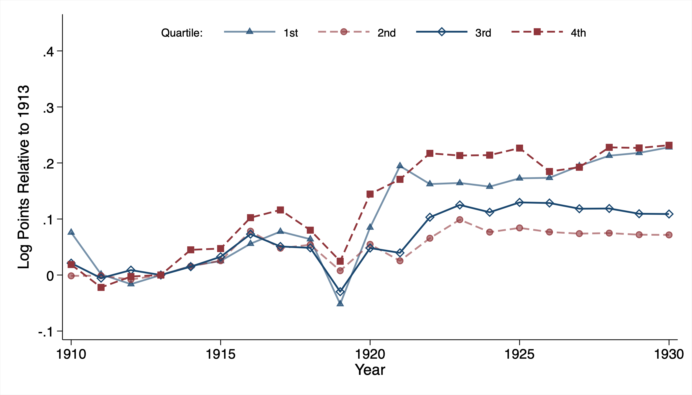
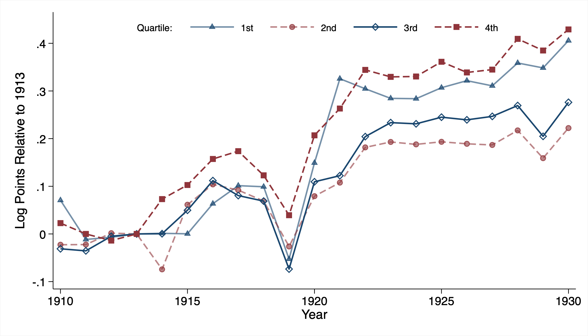

Skill Formation, Child Labor, and the Schooling Consequences of the World War I Agricultural Boom
What is this paper about?
This paper studies how a large, temporary commodity price boom during World War I affected human capital accumulation in the United States. The central contribution is identifying two channels through which the boom reduced completed schooling: (1) an opportunity cost channel, where higher farm wages pulled teenagers out of school, and (2) a dynamic complementarity channel, where the interaction between early childhood resources and local child labor intensity determined whether younger children gained or lost schooling. The paper shows that the negative aggregate effect on younger children is driven entirely by child labor intensity, not by the resource shock itself.
Important context
- The paper contributes to the literature on skill formation and dynamic complementarities (Cunha and Heckman 2007, Heckman 2007), extending these models to a historical agricultural setting where child labor mediates the effect of income shocks.
- It is distinct from papers that study commodity booms and schooling in developing countries (e.g., Bau 2020 on India). The US setting features a well-developed school system during the early high school movement, so the tradeoff is between attending high school (not just primary school) and farm work.
- The paper builds a new county-level panel of school enrollment and average daily attendance for 26 states, 1910 to 1930, drawn from state board of education reports. This dataset did not previously exist.
- Linked census data come from the Census Tree and the Census Linking Project, connecting children observed in 1910 or 1920 to their 1940 outcomes. Results are robust across both linking methods.
- The crop revenue index holds crop acreage fixed at 1910 shares and varies only prices, isolating price exposure from endogenous planting decisions. An IV strategy using crop suitability provides additional identification.


Data and methods
Data sources
- County-level enrollment and average daily attendance, 1910 to 1930 (newly constructed from state education reports)
- Census complete count data: 1910, 1920, and 1940 (linked via Census Tree and Census Linking Project)
- USDA crop price and production data for constructing the crop revenue index
- Controls for compulsory schooling laws, WWI draft exposure, boll weevil infestation, hookworm, malaria, Rosenwald schools, county health organizations, and 1918 influenza mortality
Identification
- The crop revenue index measures county-level exposure to the wartime price boom based on pre-war crop composition (1910 shares multiplied by annual national prices)
- Difference-in-differences for county-level enrollment/attendance outcomes
- Individual-level regressions with county and birth-cohort fixed effects, parental controls, and interactions with child labor intensity for linked census outcomes
- IV using predicted crop shares from soil suitability data (following Kitchens 2023)
Key specifications
- Opportunity cost channel: effect of cumulative exposure during ages 10 to 17 on years of completed schooling
- Dynamic complementarity channel: effect of exposure during ages 0 to 4, interacted with county-level child labor intensity (fraction of children 10 to 14 working in 1910)
Key results
- Enrollment and average daily attendance fell sharply at the peak of the boom (1919 to 1920), with larger declines in high-exposure counties.
- Greater exposure during teenage years reduced completed schooling by 0.27 to 0.47 years, with effects concentrated at the high school margin.
- Effects are larger for men than women, and present for both white and Black individuals.
- For children exposed during early childhood (ages 0 to 4), the net effect depends on local child labor intensity. Once child labor is accounted for, the direct effect of early exposure on boys' schooling is approximately zero. In high child labor counties, the interaction drives the negative effect. For girls, the direct effect is weakly positive, consistent with lower opportunity costs in agricultural labor markets.
- A calibration exercise yields implied discount factors between 0.95 and 0.99, consistent with forward-looking household optimization.


| Men | Women | |||||
|---|---|---|---|---|---|---|
| (1) | (2) | (3) | (4) | (5) | (6) | |
| Panel A: White | ||||||
| Exposure | -0.436 | -0.397 | -0.404 | -0.223 | -0.254 | -0.274 |
| (0.130) | (0.130) | (0.089) | (0.093) | (0.092) | (0.074) | |
| Observations | 4,228,438 | 3,888,223 | 3,888,223 | 3,033,169 | 2,760,954 | 2,760,954 |
| Panel B: Black | ||||||
| Exposure | -0.558 | -0.512 | -0.466 | -0.425 | -0.238 | -0.316 |
| (0.149) | (0.158) | (0.116) | (0.147) | (0.184) | (0.157) | |
| Observations | 429,755 | 354,673 | 354,673 | 108,726 | 80,402 | 80,402 |
| Cohort & county FE | All columns | |||||
| Parental controls | Cols 2-3 | Cols 5-6 | ||||
| Additional controls | Col 3 | Col 6 | ||||
Notes: Dependent variable is years of schooling in 1940. Exposure is cumulated over ages 11 to 14. Standard errors clustered at the state level in parentheses.
Navigation guide
- For the main argument: Read Sections 1 (Introduction) and 2 (Investing in Human Capital) for the theoretical framework, then Section 5 (Empirical Analysis) for the core results.
- For the data construction: Section 4 describes the crop revenue index, linked census data, and county-level enrollment panel. Section 3 provides historical background on the WWI agricultural boom.
- For robustness: Appendix A contains alternative samples (farm owners vs. renters, same-state movers, off-farm residents), alternative linking methods (Census Linking Project), influenza controls, IV estimates, birth order heterogeneity, and the dynamic complementarity results by subgroup.
- For the calibration exercise: Appendix B derives implied discount factors following Bau (2020) and reports results under alternative assumptions.
- Key tables: Table 1 (main results, opportunity cost channel), Table 2 (young children, dynamic complementarities). Key figures: Figure 1 (agricultural prices and wages), Figure 3 (enrollment and attendance trends).